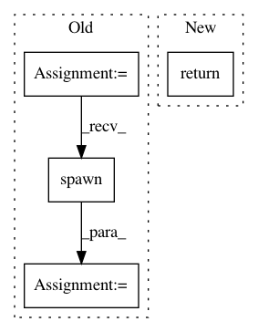

fd1456ac36e0a1ebfb800c9593f1540858ca7bea,src/python/pants/java/nailgun_executor.py,NailgunExecutor,_spawn_nailgun_server,#NailgunExecutor#Any#Any#Any#Any#Any#,295
Before Change
out_fd = safe_open(self._ng_out, "w")
err_fd = safe_open(self._ng_err, "w")
java = SubprocessExecutor(self._distribution)
jvm_options = jvm_options + [self._PANTS_NG_ARG,
self.create_owner_arg(self._workdir),
self._create_fingerprint_arg(fingerprint)]
process = java.spawn(classpath=classpath,
main="com.martiansoftware.nailgun.NGServer",
jvm_options=jvm_options,
args=[":0"],
stdin=in_fd,
stdout=out_fd,
stderr=err_fd,
close_fds=True)
logger.debug("Spawned ng server with fingerprint {fingerprint} @ {pid}"
.format(fingerprint=fingerprint, pid=process.pid))
// Prevents finally blocks and atexit handlers from being executed, unlike sys.exit(). We
After Change
client = self._create_ngclient(self.socket, stdout, stderr)
self.ensure_connectable(client)
return client
def post_fork_child(self, fingerprint, jvm_options, classpath, stdout, stderr):
Post-fork() child callback for ProcessManager.daemon_spawn().
java = SubprocessExecutor(self._distribution)
In pattern: SUPERPATTERN
Frequency: 4
Non-data size: 4
Instances
Project Name: pantsbuild/pants
Commit Name: fd1456ac36e0a1ebfb800c9593f1540858ca7bea
Time: 2015-07-17
Author: kwilson@twopensource.com
File Name: src/python/pants/java/nailgun_executor.py
Class Name: NailgunExecutor
Method Name: _spawn_nailgun_server
Project Name: vatlab/SoS
Commit Name: 3c877e3dd3fb64d737a4b9782c6d4549b00e26d1
Time: 2017-08-01
Author: BPeng1@BCBW31517465254.mdanderson.edu
File Name: src/sos/hosts.py
Class Name: LocalHost
Method Name: run_command
Project Name: vatlab/SoS
Commit Name: 3c877e3dd3fb64d737a4b9782c6d4549b00e26d1
Time: 2017-08-01
Author: BPeng1@BCBW31517465254.mdanderson.edu
File Name: src/sos/hosts.py
Class Name: RemoteHost
Method Name: run_command
Project Name: facebookresearch/ParlAI
Commit Name: 65115d2dd8a8e2f2097b371228d7f7324a19ed87
Time: 2019-07-17
Author: roller@fb.com
File Name: parlai/scripts/multiprocessing_train.py
Class Name:
Method Name: main